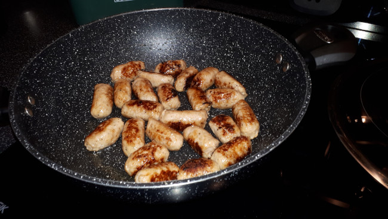
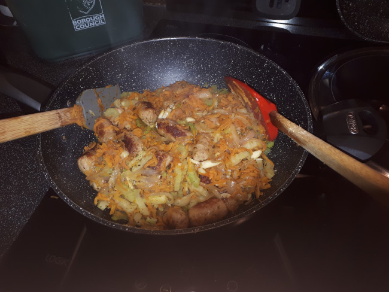
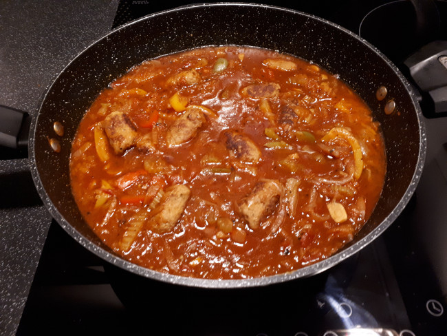

method
- Pre-heat large pan / wok
- Add sausage to the pan & brown all over
brown sausages

- Add onions, fry for 5mins
- Add carrots, fry for 5mins
- Add celery & garlic, fry for 5mins
add veg

- Add salt, pepper, mixed herbs & oregano
- Crumble in veg stock cube
- Add tomato puree, worcestershire sauce, tomatoes
- Add beans & stir gently
- Cover & simmer for about 10mins
- Add sliced peppers
- Cover and simmer until peppers are soft as you like
add peppers

- Sprinkle with fresh marjoram or thyme to serve
sausage casserole
serve with warm buttered baguette or mash